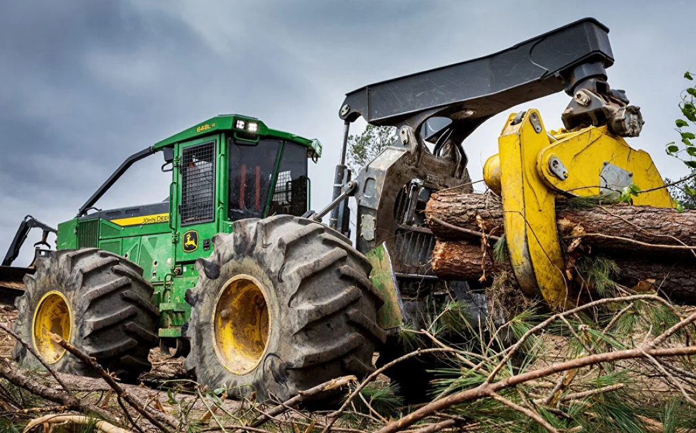

Собственная
лесозаготавительная база
Одним из конкурентных преимуществ нашей компании является собственная
лесозаготовительная база, что позволяет нам заготавливать большие объемы
древесины
для производства, при этом не зависеть от сторонних поставщиков
и ситуации на рынке
первичного сырья.
Еще одно преимущество в том, что качество отобранного сырья намного лучше,
и как следствие, качество продукции соответственно выше.

ВЫСОКОКАЧЕСТВЕННАЯ
ПРОДУКЦИЯ
Заготовительная база
Одним из конкурентных преимуществ нашей компании является собственная лесозаготовительная база, что позволяет нам заготавливать большие объемы древесины для производства, при этом не зависеть от сторонних поставщиков и ситуации на рынке первичного сырья.Склад заготовленной древесины
Склад и погрузочная платформа организованы на берегу реки Енисей, что позволяет осуществлять оперативную отгрузку и доставку двумя видами транспорта: речным - летом и автомобильным - зимой.Сортировка брёвен
Весь объем заготовленного леса проходит измерительную линию сортировки бревен Hekotek. Измерительный модуль, основанный на высокоточной лазерной технологии, вкупе с аппаратно-программным комплексом, дают исключительные по точности измерения. Эта система измеряет длину, диаметр, изгиб, конусность и, в соответствии с этими показателями, выставляет оценку качества сырья. После прохождения измерительного модуля, бревна, в соответствии с разработанной программой, раскладываются по наполнителям и далее развозятся по сырьевому складу.
ВЫСОКОКАЧЕСТВЕННАЯ
ПРОДУКЦИЯ
Полный цикл переработки древесины завершает цех по производству топливных
гранул (пеллет). Вся щепа и опилки,
производимые нашим заводом, полностью
перерабатываются в продукт
Пеллеты-экологически чистый продукт.
При производстве пеллет не добавляется
никаких вспомогательных клеющих добавок,
пеллеты производятся из чистых опилок. Для
получения цилиндрической формы опилки сушатся
и прессуются в специализированных станках.
ЭТАПЫ ПРОИЗВОДСТВА